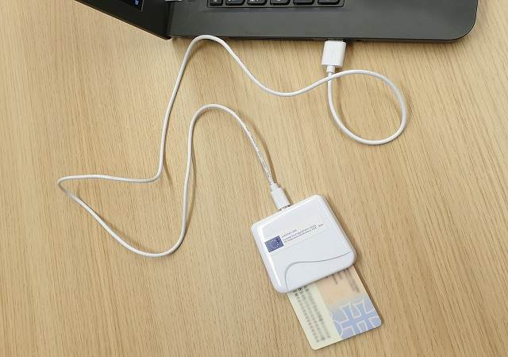

ČO JE SÚKROMNÝ KĽÚČ?
Súkromné kľúče zohrávajú zásadnú úlohu v digitálnych certifikátoch a slúžia ako základ bezpečnej online komunikácie. Pochopenie dôležitosti súkromných kľúčov je kľúčové pre podniky a jednotlivcov, ktorí chcú chrániť svoje citlivé informácie a udržiavať bezpečné online prostredie.
Súkromný kľúč sa používa na digitálne podpísanie vašej žiadosti o podpísanie certifikátu a neskôr na zabezpečenie a overenie pripojení k serveru.
Súkromný kľúč by mal byť prísne strážený, pretože ktokoľvek s prístupom k nemu môže ľahko narušiť vaše šifrovanie. (súkromný kľúč je iba textový súbor - je to ale veľmi dôležitý textový súbor a mal by byť podľa toho chránený.)

Súkromný kľúč môže byť uložený v elektronickom občianskom preukaze s čipom.
AKÉ SÚ DÔLEŽITÉ VLASTNOSTI SÚKROMNÉHO KĽÚČA?
- Digitálne certifikáty overujú identitu jednotlivcov, organizácií alebo webových stránok. Súkromné kľúče sa používajú na generovanie digitálnych podpisov, ktoré overujú pravosť a integritu údajov prenášaných cez internet. Ochrana súkromného kľúča zabezpečuje, že platný digitálny podpis môže vytvoriť iba jeho vlastník, čím sa zvyšuje dôvera a bezpečnosť pri online komunikácii.
- Súkromné kľúče pomáhajú chrániť citlivé údaje pri komunikácii na internete. Vďaka nim sa informácie, ako heslá, osobné údaje alebo platby, prenášajú bezpečne a nemôže ich čítať nepovolaná osoba.
- Ak sa súkromný kľúč dostane do nesprávnych rúk, útočníci môžu vytvárať falošné podpisy alebo sa vydávať za inú osobu. Preto je dôležité súkromný kľúč chrániť, aby boli online dokumenty a komunikácia bezpečné a dôveryhodné. (Súkromný kľúč sa nachádza iba u vlastníka podpisu, napríklad v počítači, mobile, USB tokene alebo v občianskom preukaze s čipom.)
- Oblasti ako financie, zdravotníctvo alebo elektronický obchod musia dodržiavať prísne bezpečnostné pravidlá pri ochrane údajov. Správne zabezpečenie súkromného kľúča pomáha organizáciám spĺňať tieto požiadavky, chrániť citlivé informácie a udržiavať dôveru používateľov.
Späť na elektronický podpis
Verejný kľúč